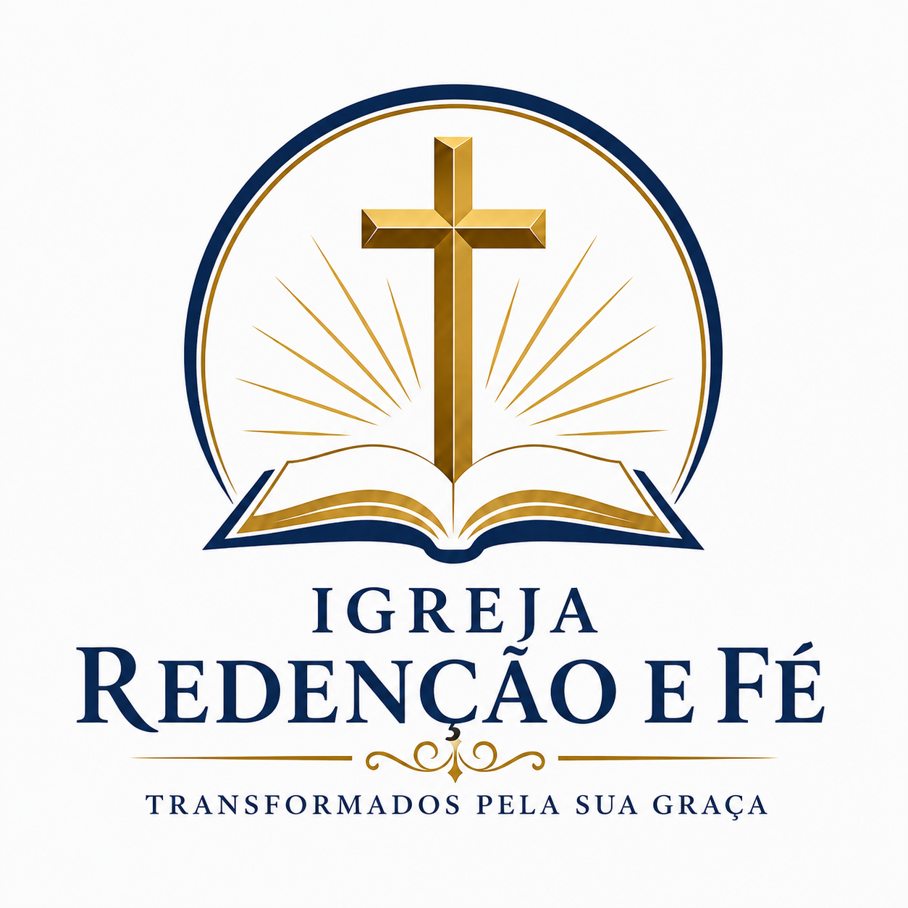

Um lugar onde compartilhamos a palavra de Deus, fortalecemos nossa fé e caminhamos juntos como família.
Conheça nossos serviçosNossa Igreja
A Igreja Redenção e Fé é uma congregação cristã de língua portuguesa localizada na região de Tampa Bay. Nosso propósito é glorificar a Deus, ensinar Sua palavra e servir nossa comunidade com amor e dedicação.
Serviços
Culto Geral
Unidos como igreja para adorar a Deus e receber Sua palavra.
Oração
Momentos dedicados a buscar a presença de Deus através da oração.
Estudos Bíblicos
Aprendendo e crescendo juntos no conhecimento das Escrituras.
Esperamos por você!
Venha compartilhar conosco um tempo de adoração, comunhão e crescimento espiritual.
Visite-nos